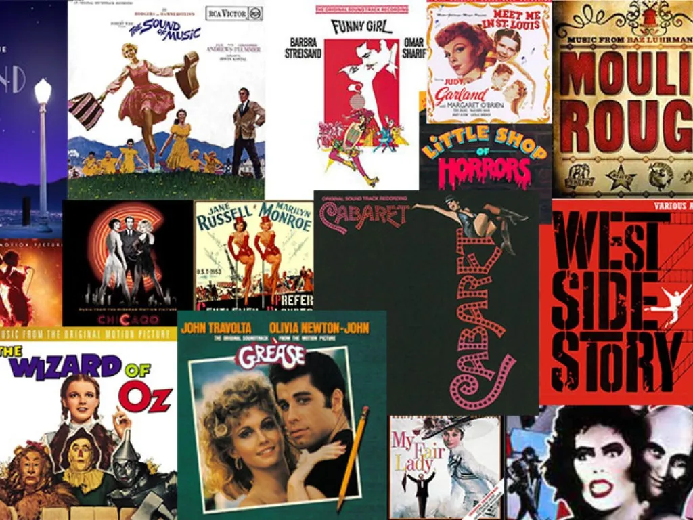

Hi! Welcome to my little blog. Here I will show you everything that I learn at the Web Development Bootcamp instructed by Angela Yu in the learning platform Udemy.
My late project is a review page about my favorite movies of all time. Click in the picture to take a look!
Check my professional journey -> About me
Any questions or comments? You can always contact me here!